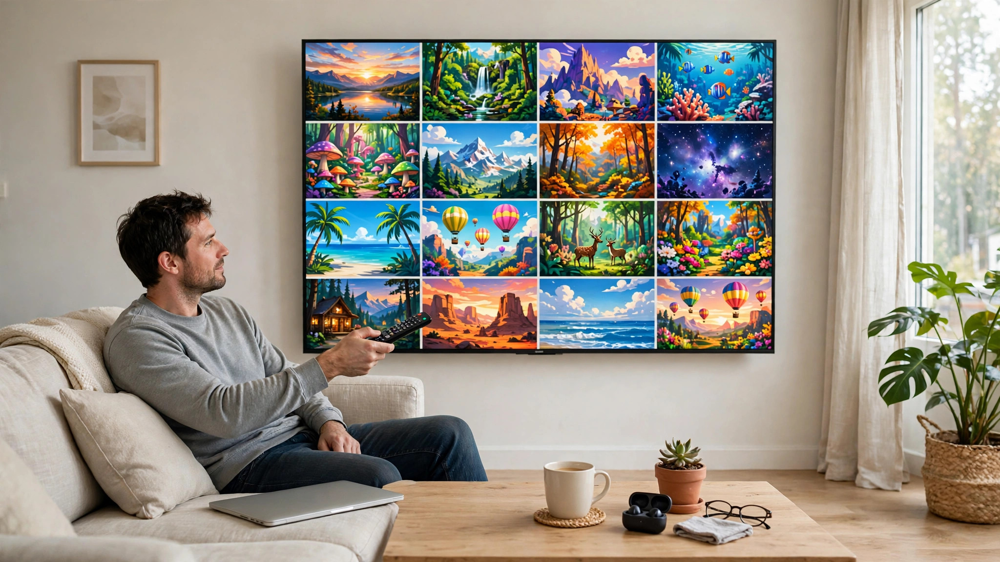

Free Streaming Services That Actually Work in 2026: 8 Legal Ways to Watch for $0

Streaming prices went up again in 2026 — Netflix, Peacock, Disney+, Paramount+ and almost every other paid service now costs more than it did a year ago. So the obvious question is: what can you watch for free, legally, without handing your card details to a shady site?
The answer is: a lot. Every service below is 100% legal, paid for by advertising or by public libraries — not by subscriptions. No card needed, no "free trial" that charges you later. We checked each one against fresh November 2026 guides, and we left out one name that nearly every other list still recommends even though it no longer exists.
The 8 Free Services That Work
1. Tubi — the best overall
Owned by Fox Corporation, Tubi is the first app to install. It has the biggest free on-demand library anywhere — more than 275,000 movies and TV episodes by Tubi's own count — with light ads and no account required. Pick a movie, press play. In early 2026 it added a wave of Warner Bros. and Cartoon Network catalog titles, so the back catalog is deeper than ever.
2. Pluto TV — best cable replacement
Owned by Paramount Skydance, Pluto TV is the original free ad-supported TV service and still the best lean-back experience: more than 400 live channels with a proper programme guide, plus an on-demand library. Open it, pick a channel, watch — the closest thing to old-school cable, for $0.
3. The Roku Channel — best interface
Roku's own free hub no longer needs Roku hardware — it runs in a browser and on Fire TV, Samsung TVs, iOS and Android. Roku reports 80,000+ free movies and TV shows and 350+ live channels, plus Roku Originals. Everything in the channel is free.
4. Plex — best for film fans
Plex mixes 600+ live channels and 50,000+ free titles with tools to organise your own media collection. One change to know: since April 2025, streaming your own personal files to a remote device needs a paid Plex Pass or Remote Watch Pass — but Plex's own free streaming catalog is still free.
5. Sling Freestream — best free live-TV guide
Sling's free tier offers 600+ free channels with a guide, favourites and optional DVR — no paid Sling subscription needed, and an account is optional. If Pluto TV's lineup does not suit you, this is the best second option for channel surfing.
6. Xumo Play — least sign-up friction
Xumo Play offers 350+ channels and 15,000+ on-demand titles with no subscription and no login at all. It is the simplest of the lot: open the app or website and watch.
7. Kanopy — best for classics
Kanopy is free with a public library card from a participating library, and it is the connoisseur's pick: classic films, documentaries and the Criterion Collection, with no ads at all. If your library supports it, this is the highest-quality free catalog on this list.
8. Hoopla — best library all-rounder
Also free with a participating library card, Hoopla covers movies, TV shows and audiobooks in one app. Between Kanopy and Hoopla, a library card is the best free streaming deal nobody talks about.
What Free Streaming Actually Costs You
Free is real, but it is not perfect. Three honest trade-offs:
- Ads. Every service on this list except Kanopy and Hoopla shows ad breaks. Tubi's ad load is the lightest of the big ones; the others interrupt more often.
- Catalogs rotate. Movies appear and disappear as licences expire. A film that is free today may be gone next month — that is normal for free services, not a bug.
- Availability varies by country. The catalogs, channels and even the services themselves change by region. Search for the exact title before assuming it is free where you live.
Start with Tubi and Pluto TV. Add The Roku Channel if you use Roku, and Sling Freestream or Xumo Play if you like channel surfing. Add Kanopy and Hoopla if your library supports them. That combination covers most movie nights for exactly $0.
The "Free IPTV" Trap — Read This Before You Click
Search for "free IPTV" and you will find hundreds of sites promising every channel on earth for a few dollars a month — or free. Almost all of them are one of three things, and none of them is a bargain:
Illegal sellers. They offer thousands of live channels with no licences to the content. They go dark after takedowns, and they usually demand crypto, gift cards or payment-app transfers — payment methods with no buyer protection, so your money is gone when they vanish. In the US, the Protecting Lawful Streaming Act of 2020 made large-scale commercial illegal streaming a felony.
Phishing clones. Scammers copy real IPTV and streaming pages, register lookalike domains one letter off from the real one, and swap the payment destination. An SSL padlock does not prove a site is real — read the full domain before you pay anything.
Fake free streams and loaded boxes. Sites that promise a free stream of a big match or a new film, then ask for card details to "verify your age" or "confirm your region" — that is the scam, not the verification. Android boxes sold pre-loaded with piracy apps can also carry malware, and researchers have found cheap TV boxes that shipped with malware already installed.
The scale is not small: US consumers reported $15.9 billion lost to fraud in 2025, according to FTC data, and phishing was the most-reported internet crime type that year, with 191,561 complaints to the FBI's Internet Crime Complaint Center. The rule is simple: if a "free" stream asks for your card details, close the tab. The eight services above never will.
Quick Answers
Is Tubi really free?
Yes. It is owned by Fox, funded by ads, and needs no account and no card. Its catalog is over 275,000 movies and TV episodes.
Do I need a library card for Kanopy and Hoopla?
Yes — a free card from a participating public library. Check your library's website to see if it offers either service.
What happened to Freevee?
Amazon shut it down. The phase-out was announced in November 2024, the standalone app was retired in 2025, and the catalog moved into Prime Video's free-with-ads shelf.
Can I watch live sports free, legally?
Only a little. Free services carry some sports channels, replays and highlights, but live major sports generally need a paid service. Any site promising every live match free is not legal.
Is "free IPTV" legal?
Only when the service is licensed — like the eight on this page. Sellers offering "every channel" for a few dollars a month hold no licences, and their services disappear without warning.